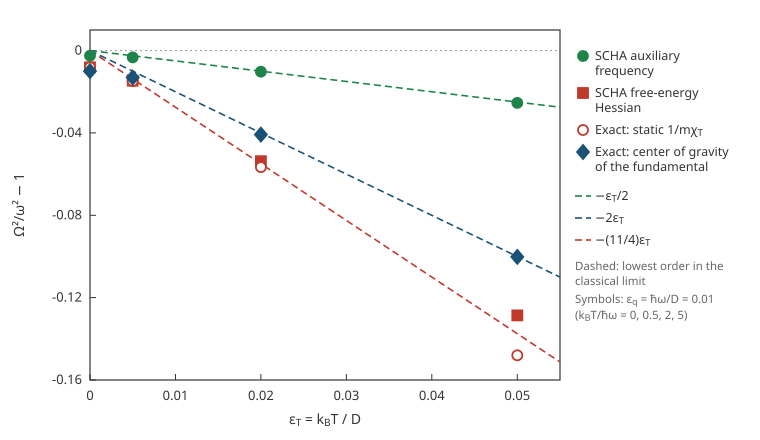

Chapter 15Finite-Temperature Phonon Calculation Methods (Beta Version)
In Chapter 14, we computed the phonon self-energy diagram by diagram for an anharmonic oscillator with one degree of freedom (Section 14.6, Section 14.7.3): the loop from the quartic anharmonic term, and the tadpole and the bubble from the cubic anharmonic term. For the Morse potential, the shift of the squared frequency at high temperature, in units of $\epsilon_T=k_BT/D$, is loop $+\frac74$, tadpole $-\frac94$, and bubble $-\frac32$, for a total of $-2$, in agreement with exact diagonalization.
When finite-temperature phonons are computed in actual research, this calculation is carried out on force constants from first-principles calculations or on trajectories from molecular dynamics (MD). There are many methods for doing so: three-phonon and four-phonon perturbation theory, self-consistent phonon (SCPH), the stochastic self-consistent harmonic approximation (SSCHA), TDEP, MD power spectra (DynaPhoPy), path-integral MD, and so on. Even if one has heard the names, it is hard to see how they are related to one another and what each of them approximates. When “phonons obtained with SSCHA” and “peaks of the MD power spectrum” in papers disagree, it is hard to judge which one is correct, or whether the same quantity is being compared in the first place.
The claim of this chapter is that the differences among the methods can be organized, for the most part, into the following two points.
(1) Which diagrams of Chapter 14 (tadpole, loop, nested loops, bubble, sunset) are summed.
(2) Whether the frequency that comes out is an auxiliary frequency, a static frequency (the curvature of the free energy), or a dynamical frequency (a pole of the response function).
The distinction in (2) is easily overlooked. In Section 15.4, we derive by hand that, for the Morse oscillator, these three take completely different values at lowest order, $-\frac12\epsilon_T$, $-\frac{11}{4}\epsilon_T$, and $-2\epsilon_T$, respectively, and we check them numerically against the exact solution.
- The quantities we want from finite-temperature phonon calculations ($\Omega_q(T)$, $\Gamma_q(T)$, the free energy, thermal expansion, the stabilization of imaginary modes, structural phase transitions), and what the harmonic approximation and the quasiharmonic approximation (QHA) can and cannot do
- An overall map of perturbation theory, SCPH, SCHA/SSCHA, TDEP, MD spectra, and path-integral MD
- The derivation of the Gibbs–Bogoliubov inequality $F\le F_0+\braket{\Ham-\Ham_0}_0$ (classically from Jensen's inequality; quantum mechanically from the concavity of the free energy and the Lehmann representation)
- The equations of the self-consistent harmonic approximation (SCHA), $m\Omega^2=\braket{U''}$ and $\braket{U'}=0$, and the fact that its frequency is the sum of the loop and the tadpole of Chapter 14
- Solving the SCHA for the purely quartic oscillator and the Morse oscillator, and expanding the results to put them in one-to-one correspondence with the diagrams of Chapter 14
- The distinction among the auxiliary frequency, the free-energy Hessian, and the dynamical pole; the values $-\frac12$, $-\frac{11}{4}$, and $-2$ (in units of $\epsilon_T$) for the Morse oscillator, and their numerical check
- Which diagrams and which frequency SSCHA, SCPH in reciprocal space, TDEP, and DynaPhoPy each give
- How to choose a method, and common pitfalls such as confusing constant volume with constant pressure
15.1 What Do We Want to Compute?
15.1.1 The quantities we want
What we want to know from finite-temperature phonon calculations is roughly the following. We write a mode of the crystal as $q\equiv(\qq,\nu)$ ($\qq$ is the wave vector and $\nu$ the branch).
- The frequency $\Omega_q(T)$ and the linewidth $\Gamma_q(T)$. These are the quantities measured by inelastic neutron and X-ray scattering and by Raman scattering. As we saw in Chapter 12, the scattering intensity is proportional to the dynamic structure factor, that is, to the imaginary part of the response function, $\mathrm{Im}\,\chi$. In the language of Chapter 14, $\Omega_q$ is the pole of the Dyson equation, $\Omega^2=\omega^2+2\omega\Sigma'(\Omega)$, and $\Gamma_q=-\Sigma''(\Omega_q)$ is the half width at half maximum that comes from the imaginary part of the self-energy (Section 14.4.3, Table 14.3).
- The free energy $F(T,V)$. Phase stability, phase diagrams, thermal expansion, and heat capacity all follow from it.
- Thermal expansion and the average structure. The temperature dependence of the volume (lattice constants) and of the internal coordinates. In studies of negative thermal expansion (NTE), this is the main subject.
- The stabilization of imaginary modes. In high-temperature phases (such as the high-temperature phase of cubic perovskites), performing the harmonic approximation around the static lowest-energy structure produces modes whose frequencies are imaginary. In reality, the phase exists stably at high temperature. This is because thermal fluctuations stiffen the modes.
- Structural phase transitions. The frequency of a soft mode (or the curvature of the free energy) approaches zero as the temperature changes.
15.1.2 What the harmonic approximation and the quasiharmonic approximation (QHA) can and cannot do
The starting point is the harmonic approximation. We obtain the second derivatives of the energy with respect to the atomic displacements (the second-order force constants) at the static stable structure and diagonalize them to obtain $\omega_q$. Temperature enters only through the Bose distribution $n_B(\hbar\omega_q)=(\ee^{\beta\hbar\omega_q}-1)^{-1}$, so the frequencies themselves do not depend on temperature.
The quasiharmonic approximation (QHA) takes into account only the volume dependence of the harmonic frequencies. We perform a harmonic calculation at each volume $V$ and minimize
$$ \begin{equation} F_{\rm QHA}(T,V)=U_0(V)+\sum_q\left[\frac{\hbar\omega_q(V)}{2}+k_BT\ln\left(1-\ee^{-\beta\hbar\omega_q(V)}\right)\right] \label{eq:15-FQHA} \end{equation} $$with respect to $V$ to determine $V(T)$ ($U_0$ is the static energy). Thermal expansion comes out in this way. The only temperature dependence of the frequencies is that of $\omega_q(V(T))$ through the volume.
The temperature dependence of the frequencies measured in experiments generally splits into two terms.
Here $\gamma_q=-\partial\ln\Omega_q/\partial\ln V$ is the mode Grüneisen parameter, and $\alpha=\dd\ln V/\dd T$ is the volumetric thermal expansion coefficient. The QHA is the approximation that computes only the second term and sets the first term to $0$. As we saw in Chapter 14, the second term corresponds to the tadpole through a uniform strain (Sections 14.11.2–14.11.3). The first term contains the loop, the bubble, and the tadpole through internal coordinates.
What the QHA cannot do
- The change of the frequency at constant volume, $(\partial\Omega_q/\partial T)_V$, does not come out. The loop and the bubble are missing entirely.
- The linewidth $\Gamma_q$ does not come out. Since the system is a sum of harmonic oscillators, the phonons have infinite lifetimes.
- Imaginary modes cannot be handled. If there is a mode with $\omega_q^2<0$, the $\ln$ in Eq. \eqref{eq:15-FQHA} cannot be defined, and the free energy itself loses its meaning. The QHA cannot be used for phases that are stable only at high temperature.
- Large-amplitude anharmonicity (potentials with two minima, rotating molecular groups, etc.) cannot be represented by the volume dependence of the frequencies.
All of the following methods were developed to remedy these shortcomings.
15.2 A Map of the Methods
First, let us view the whole picture at once (Figure 15.1, Table 15.1). The classification is by “what is used as input.”
| Class | Representative methods | Input | Main output | This chapter |
|---|---|---|---|---|
| (A) Perturbation theory | Three-phonon and four-phonon self-energies | Harmonic, cubic, and quartic force constants | $\Gamma_q$, frequency shifts, thermal conductivity | Sections 15.6, 15.9 |
| (B) Self-consistent | SCPH, SCHA, SSCHA | Force constants (SCPH) / forces for each configuration (SSCHA) | Renormalized frequencies, free energy, average structure | Sections 15.3–15.6 |
| (C) Effective harmonic model | TDEP, etc. | Forces and displacements from finite-temperature MD | Temperature-dependent effective force constants | Section 15.7 |
| (D) MD spectra | Velocity autocorrelation, mode projection (DynaPhoPy), path-integral MD | MD trajectories | Spectra, $\Omega_q$, $\Gamma_q$ | Section 15.8 |
| (E) Tools | QHA, force-constant extraction, machine-learning potentials | — | — | Various sections |
15.3 The Self-Consistent Harmonic Approximation from the Variational Principle
The frequencies of the harmonic approximation do not depend on temperature because they use the curvature of the potential at the static structure. At finite temperature, the atoms fluctuate widely around their equilibrium positions. Then why not use “the curvature averaged over the range of the fluctuations”? What turns this into a consistent approximation is the variational principle for the free energy. The idea goes back to Hooton (1955) [1], and Werthamer (1970) [2] formulated the self-consistent phonon from the stationarity condition of a free-energy functional.
15.3.1 The Gibbs–Bogoliubov inequality
Theorem 15.1: The Gibbs–Bogoliubov inequality
For the free energy $F=-k_BT\ln\Tr\,\ee^{-\beta\Ham}$ of a system with Hamiltonian $\Ham$ and an arbitrary “trial Hamiltonian” $\Ham_0$,
holds. Here $F_0=-k_BT\ln\Tr\,\ee^{-\beta\Ham_0}$, and $\braket{\cdots}_0$ is the thermal average with respect to $\Ham_0$ (Isihara [3]; the original SSCHA paper [4] also starts from this inequality).
The right-hand side is a computable quantity (because we choose $\Ham_0$ to be a solvable model). The true free energy on the left-hand side cannot be computed. Therefore, if we give $\Ham_0$ parameters and minimize the right-hand side, we obtain the best upper bound on the true $F$ and the “best $\Ham_0$” that gives it.
Derivation 15.1: The classical case (Jensen's inequality)
Step 1. Set $V\equiv\Ham-\Ham_0$. In classical statistics, $\Ham$ and $\Ham_0$ are commuting functions, so we can split $\ee^{-\beta\Ham}=\ee^{-\beta\Ham_0}\ee^{-\beta V}$, and
$$ \frac{Z}{Z_0}=\frac{\int\dd\Gamma\,\ee^{-\beta\Ham_0}\ee^{-\beta V}}{\int\dd\Gamma\,\ee^{-\beta\Ham_0}}=\braket{\ee^{-\beta V}}_0 $$($\dd\Gamma$ is the volume element of phase space).
Step 2. Since the exponential function is convex, $\braket{\ee^{X}}\ge\ee^{\braket{X}}$ (Jensen's inequality) holds for averages over a probability distribution. Setting $X=-\beta V$,
$$ \frac{Z}{Z_0}\ge\ee^{-\beta\braket{V}_0}. $$Step 3. Taking the logarithm of both sides and multiplying by $-k_BT$ reverses the direction of the inequality, giving $F-F_0\le\braket{V}_0$. ∎
In the quantum case, $\Ham$ and $\Ham_0$ do not commute, so the splitting in Step 1 is not possible. We therefore take a different route. The shortcut is to use the Lehmann representation of Chapter 8.
Derivation 15.2: The quantum case (concavity of the free energy)
Step 1: Introducing a coupling constant. Let $\Ham_\lambda=\Ham_0+\lambda V$ ($0\le\lambda\le1$) and $F(\lambda)=-k_BT\ln\Tr\,\ee^{-\beta\Ham_\lambda}$. Then $F(0)=F_0$ and $F(1)=F$.
Step 2: The first derivative. $\dfrac{\dd}{\dd\lambda}\Tr\,\ee^{-\beta\Ham_\lambda}=-\beta\Tr\left[V\ee^{-\beta\Ham_\lambda}\right]$ (inside the trace we can permute cyclically, so this form holds even though the operators do not commute). Therefore
$$ F'(\lambda)=\braket{V}_\lambda . $$Step 3: The second derivative. Using the eigenstates $\ket{n}$ of $\Ham_\lambda$ (eigenvalues $E_n$, Boltzmann weights $p_n$), the change in $\braket{V}_\lambda$ when $\lambda$ is changed slightly is nothing but the static linear response of Chapters 7 and 8. Computing it in second-order perturbation theory, we obtain
$$ F''(\lambda)=-\chi_T,\qquad \chi_T=\sum_{n\neq m}\frac{p_n-p_m}{E_m-E_n}\abs{V_{mn}}^2+\beta\left[\sum_np_nV_{nn}^2-\braket{V}_\lambda^2\right] $$(in the absence of degeneracy; $\chi_T$ is the isothermal static susceptibility to the “force” conjugate to $V$). Each term in the first sum is $\ge0$ because $p_n-p_m$ and $E_m-E_n$ have the same sign, and the second term is $\ge0$ because it is the variance of $V_{nn}$. Hence $\chi_T\ge0$, that is, $F''(\lambda)\le0$: $F(\lambda)$ is concave.
Step 4. A concave function lies below its tangent lines. Extending the tangent at $\lambda=0$ to $\lambda=1$, we get
$$ F(1)\le F(0)+F'(0)=F_0+\braket{V}_0 . $$∎ Physically, the stability condition that “the static susceptibility is never negative” becomes the variational principle itself.
15.3.2 Taking a harmonic oscillator as the trial Hamiltonian
For one degree of freedom, $\Ham=\dfrac{p^2}{2m}+U(x)$, we choose the trial Hamiltonian to be a harmonic oscillator with center $x_0$ and frequency $\Omega$:
$$ \begin{equation} \Ham_0=\frac{p^2}{2m}+\frac12m\Omega^2(x-x_0)^2 . \label{eq:15-H0} \end{equation} $$$x_0$ and $\Omega$ are the variational parameters. We write down the necessary quantities in turn.
- The free energy of the harmonic oscillator: $F_0(\Omega)=k_BT\ln\left[2\sinh\dfrac{\beta\hbar\Omega}{2}\right]$.
- The variance of the position (Chapter 13, and $\braket{\hat A^2}_0=2n_B+1$ of Chapter 14, Section 14.4.2 written with the frequency $\Omega$; $\coth\frac{\beta\hbar\Omega}{2}=2n_B(\hbar\Omega)+1$): $$ \begin{equation} s\equiv\braket{(x-x_0)^2}_0=\frac{\hbar}{2m\Omega}\coth\frac{\beta\hbar\Omega}{2} \;\xrightarrow{\;k_BT\gg\hbar\Omega\;}\;\frac{k_BT}{m\Omega^2}. \label{eq:15-s} \end{equation} $$
- The kinetic energy is common to $\Ham$ and $\Ham_0$ and cancels, so $\braket{\Ham-\Ham_0}_0=\braket{U}_0-\frac12m\Omega^2 s$.
Therefore the variational free energy is
To compute $\braket{U}_0$ here, the following fact is useful.
Why does it suffice to “average over a Gaussian distribution” even in quantum mechanics?
$\braket{U(x)}_0$ is the average of a function of the position only, so all we need is the position distribution $P(x)=\braket{x|\hat\rho_0|x}$. In the thermal equilibrium state of a harmonic oscillator, all the even moments of $x$ factorize into products of the second moment. This is nothing but Wick's theorem of Chapter 13 and Appendix B ($\braket{x^4}_0=3\braket{x^2}_0^2$, etc.), and it holds quantum mechanically and at finite temperature. If all the moments are the same as those of a Gaussian distribution, the distribution is Gaussian. Therefore
$$ \braket{U}_0=\int_{-\infty}^{\infty}\dd y\,\frac{\ee^{-y^2/2s}}{\sqrt{2\pi s}}\,U(x_0+y) $$and quantum effects appear only in the fact that the variance $s$ contains the $\coth$ of Eq. \eqref{eq:15-s}. Zero-point motion, $s\to\hbar/2m\Omega$, is also included here.
Gaussian averages obey two convenient identities. Since $\partial_{x_0}$ only differentiates the $U$ in the integrand, $\partial_{x_0}\braket{U}_0=\braket{U'}_0$. Also, since the Gaussian function satisfies the diffusion equation $\partial_s g=\frac12\partial_y^2g$, integrating by parts twice gives $\partial_s\braket{U}_0=\frac12\braket{U''}_0$.
Derivation 15.3: The self-consistent equations
Step 1: Stationarity with respect to $x_0$. Since $s$ does not depend on $x_0$, $\partial F_{\rm SCHA}/\partial x_0=\braket{U'}_0=0$. This is the condition that the average force vanishes.
Step 2: Stationarity with respect to $\Omega$. Noting that $\dfrac{\dd F_0}{\dd\Omega}=\dfrac{\hbar}{2}\coth\dfrac{\beta\hbar\Omega}{2}=m\Omega s$, we differentiate Eq. \eqref{eq:15-FSCHA} with respect to $\Omega$ ($s$ is also a function of $\Omega$, and $s'\equiv\dd s/\dd\Omega$):
$$ \frac{\dd F_{\rm SCHA}}{\dd\Omega} =m\Omega s+\frac{\partial\braket{U}_0}{\partial s}s'-m\Omega s-\frac12m\Omega^2s' =s'\left[\frac{\partial\braket{U}_0}{\partial s}-\frac12m\Omega^2\right]. $$Since $s'\neq0$, the bracket vanishes. Using the identity $\partial_s\braket{U}_0=\frac12\braket{U''}_0$, we obtain
∎ The average on the right-hand side is taken over a Gaussian distribution whose variance $s$ is determined by $\Omega$, so $\Omega$ appears on the right-hand side of the equation that determines $\Omega$. This is the meaning of “self-consistent.”
Eq. \eqref{eq:15-SCHA} can be read as “the curvature of the potential averaged over thermal fluctuations becomes the effective spring constant.” As we saw in Chapter 14 (Sections 14.8.1–14.8.2), $\braket{U''}/m$ expanded to lowest order is the sum of the loop and the tadpole. Therefore, the $\Omega$ of the SCHA does not contain the bubble. We confirm this concretely in the next section.
15.4 Example: Working by Hand with One Degree of Freedom — Three Frequencies
15.4.1 The purely quartic oscillator: the loop and nested loops
Let $U(x)=\frac12m\omega^2x^2+\varphi x^4$ (no cubic term). By symmetry $x_0=0$, and since $U''=m\omega^2+12\varphi x^2$, we have $\braket{U''}_0=m\omega^2+12\varphi s$. Eq. \eqref{eq:15-SCHA} becomes
If $\braket{x^2}_\Omega$ on the right-hand side is evaluated with the harmonic frequency $\omega$, this is exactly the loop self-energy of Chapter 14, $2\omega\Sigma_{\rm loop}=12\varphi\braket{\hat x^2}_0/m$ (Section 14.6.1, Table 14.4). Eq. \eqref{eq:15-quartic} is the equation in which the propagator inside the loop is replaced by that with the renormalized frequency $\Omega$, and it is the same as the SCPH equation written in Chapter 14 as “computing $\braket{x^2}$ with the renormalized frequency” (Section 14.9.3). In this chapter, we have thus derived it from the variational principle.
In the classical limit $\braket{x^2}_\Omega\to k_BT/m\Omega^2$, Eq. \eqref{eq:15-quartic} becomes the quadratic equation in $\Omega^2$
$$ \begin{equation} \Omega^4-\omega^2\Omega^2-\frac{12\varphi k_BT}{m^2}=0 \label{eq:15-quartic-cl} \end{equation} $$We showed in Chapter 14, Section 14.9.3 that, when this is expanded, the first term is the loop and the second term is the double loop (including the quantum case). Inserting the Morse ratio $\varphi=\frac76\xi^2/m\omega^2$, we get
$$ \frac{\Omega^2}{\omega^2}-1=\underbrace{\frac74\epsilon_T}_{\text{loop}}\;\underbrace{-\frac{49}{16}\epsilon_T^2}_{\text{double loop}}+\cdots $$(Chapter 14, Section 14.9.2, Table 14.6). Solving self-consistently corresponds to summing infinitely many nested loops, with loops placed inside loops. However, the sunset ($-\frac{147}{256}\epsilon_T^2$, a four-phonon process), which is of the same order $\varphi^2$, is not included. This is because the lines inside the sunset are connected in a way that cannot be absorbed into a loop.
Physical Meaning: Why do soft modes harden?
In Eq. \eqref{eq:15-quartic-cl}, let us take $\omega^2<0$ (imaginary in the harmonic approximation). If $\varphi>0$, a root with $\Omega^2>0$ appears at sufficiently high temperature, and the mode has a real frequency. In the purely quartic case $\omega=0$, $\Omega=(12\varphi k_BT/m^2)^{1/4}$. A mode that is unstable in the harmonic approximation is stabilized at high temperature because, when it fluctuates with large amplitude, it feels the quartic wall and the average curvature becomes positive. SCPH in reciprocal space (Section 15.6) does this for all the modes of a crystal.
15.4.2 The Morse oscillator: the tadpole enters as well
Let $U(x)=D\left(1-\ee^{-ax}\right)^2=D\left[1-2\ee^{-ax}+\ee^{-2ax}\right]$, with $\frac12m\omega^2=Da^2$, that is, $a=2\xi/m\omega^2$ (Chapter 14, Section 14.2.2; we also use $D=m^3\omega^6/8\xi^2$ and $\varphi=\frac76\xi^2/m\omega^2$ from that section here). The Gaussian averages take closed forms for exponential functions.
Derivation 15.4: The SCHA for the Morse potential
Step 1: Gaussian averages of exponential functions. Completing the square gives $\displaystyle\int\dd y\,\frac{\ee^{-y^2/2s}}{\sqrt{2\pi s}}\ee^{-ky}=\ee^{k^2s/2}$. Therefore $\braket{\ee^{-kx}}_0=\ee^{-kx_0+k^2s/2}$, and
$$ \begin{equation} \braket{U}_0=D\left[1-2E_1+E_2\right],\qquad E_1\equiv\ee^{-ax_0+a^2s/2},\quad E_2\equiv\ee^{-2ax_0+2a^2s}. \label{eq:15-Morse-U} \end{equation} $$Step 2: Stationarity with respect to $x_0$. From $\partial_{x_0}E_1=-aE_1$ and $\partial_{x_0}E_2=-2aE_2$, we have $\partial_{x_0}\braket{U}_0=2aD(E_1-E_2)=0$, that is, $E_1=E_2$:
$$ -ax_0+\frac{a^2s}{2}=-2ax_0+2a^2s \quad\Longrightarrow\quad x_0=\frac32as . $$Step 3: Stationarity with respect to $s$. From $\partial_sE_1=\frac{a^2}{2}E_1$ and $\partial_sE_2=2a^2E_2$, we have $\partial_s\braket{U}_0=Da^2(-E_1+2E_2)$. At the stationary point $E_1=E_2=E$, with $E=\ee^{-\frac32a^2s+\frac12a^2s}=\ee^{-a^2s}$. Hence $\frac12m\Omega^2=\partial_s\braket{U}_0=Da^2\ee^{-a^2s}$, and using $Da^2=\frac12m\omega^2$,
∎ Since $\Omega$ appears on the right-hand side of the third equation, the three equations are solved simultaneously by numerical means (15.4.5).
Thermal expansion. The first equation is the same as $\braket{\hat x}=3\xi\braket{\hat x^2}_0/m\omega^2$ of Chapter 14 (Section 14.6.2, Section 14.8.2). Indeed, since $\xi=Da^3$ and $m\omega^2=2Da^2$, we have $3\xi s/m\omega^2=\frac32as$. The SCHA automatically incorporates the shift of the average position, which is the physics of the tadpole, as the variation of the center $x_0$.
The frequency at lowest order. Since $a^2\hbar/2m\omega=\hbar\omega/4D=\epsilon_{\rm q}/4$,
$$ \begin{equation} \frac{\Omega^2}{\omega^2}-1\simeq-a^2s\simeq-\frac{\epsilon_{\rm q}}{4}\left(2n_B+1\right) \;\xrightarrow{\;k_BT\gg\hbar\omega\;}\;-\frac12\epsilon_T \label{eq:15-aux-lowest} \end{equation} $$($n_B=n_B(\hbar\omega)$). This agrees with the sum of the loop and the tadpole of Chapter 14, $+\frac74-\frac94=-\frac12$.
15.4.3 What is missing: the bubble
However, the true shift for the Morse potential is $-2\epsilon_T$, as we confirmed in Chapter 14 with the exact levels of the Morse potential (Section 14.3.6) and the exact values in Table 14.6 (for the breakdown, see Section 14.7.3). The SCHA frequency \eqref{eq:15-aux-lowest} gives only a quarter of it. The difference, $-\frac32\epsilon_T$, is the bubble, that is, the level repulsion with the overtone (the two-phonon state).
Why it is missing is clear from Eq. \eqref{eq:15-SCHA}. The $\Omega$ of the SCHA is “the curvature averaged over a Gaussian distribution,” which in the language of Chapter 14 is the second moment of the response spectrum, $\braket{z^2}=\braket{U''}/m$ (the sum rule of Section 14.8.3). Besides the fundamental, the spectrum has overtone lines, and the second moment is the weighted average of both. Since the overtone lies above (near $2\omega$), the position of the fundamental is shifted below the average. This “downward shift” is the bubble, and it does not come out of a static quantity such as the average curvature.
The SCHA frequency is an “auxiliary” frequency
The $\Omega$ of the SCHA (in a crystal, the frequencies obtained by diagonalizing the auxiliary force constants) is a parameter of the trial Hamiltonian introduced to minimize the free energy, and it is not the peak position in a scattering experiment. Bianco et al. state that this quantity should be understood as an auxiliary quantity, and point out its analogy with the one-particle energies of Hartree–Fock and density functional theory [5]. In this chapter, we call it the auxiliary frequency. To obtain physical frequencies, one must either (i) take the second derivative (Hessian) of the free energy or (ii) add dynamical corrections that include the bubble.
15.4.4 The curvature (Hessian) of the free energy: the static frequency
The physical “static frequency” is the curvature of the free energy regarded as a function of the average position. If we apply an external force $f$ to obtain $\Ham-fx$ (here $f$ is the force itself, and $\chi_T$ below is a value in the convention of $\chi_{\text{mech}}$ of Chapter 14, Section 14.4.1; it has the opposite sign to $\chi^R_{xx}$ in this book's convention $\Ham_{\text{ext}}=+f\hat B$), then $\bar x\equiv\braket{x}=-\partial F/\partial f$, and the isothermal static susceptibility is $\chi_T=\partial\bar x/\partial f$. If we construct the Legendre transform $A(\bar x)=F+f\bar x$, then $\dd A/\dd\bar x=f$ and $\dd^2A/\dd\bar x^2=\partial f/\partial\bar x=1/\chi_T$. That is,
$$ \begin{equation} m\Omega_{\rm static}^2\equiv\frac{\dd^2A}{\dd\bar x^2}=\frac{1}{\chi_T} \label{eq:15-static-def} \end{equation} $$This is the isothermal version of the static susceptibility $\chi(\omega\to0)$ of Chapter 8, and corresponds to “the spring constant when pushed slowly.”
In the SCHA, $F_{\rm SCHA}(x_0)$, minimized with respect to $\Omega$ alone with $x_0$ fixed, is an approximation to $A(\bar x)$. Its second derivative is obtained as follows, noting that $s$ is made to follow $x_0$.
Derivation 15.5: The Hessian of the SCHA free energy
Step 1. Take $(x_0,s)$ as the variables. Expressing $\Omega$ in terms of $s$ and setting $G(s)\equiv F_0-\frac12m\Omega^2s$, we have $F_{\rm SCHA}=G(s)+\braket{U}_0$. The same calculation as in Derivation 15.3 gives $G'(s)=-\frac12m\Omega^2$ and $G''(s)=-m\Omega\,\dd\Omega/\dd s>0$ ($\Omega$ decreases as $s$ increases). In the classical limit, $\Omega^2=k_BT/ms$ gives $G''=k_BT/2s^2$.
Step 2. Differentiating twice with respect to $x_0$ while keeping $s$ at its optimal value, implicit differentiation gives
$$ \frac{\dd^2F_{\rm SCHA}}{\dd x_0^2}=F_{xx}-\frac{F_{xs}^2}{F_{ss}}, $$and from the identities for Gaussian averages, $F_{xx}=\braket{U''}_0=m\Omega^2$, $F_{xs}=\partial_s\braket{U'}_0=\frac12\braket{U'''}_0$, and $F_{ss}=G''+\frac14\braket{U''''}_0$.
Step 3: Tidying up the form. Setting $\Lambda\equiv-1/4G''$ ($<0$), we have
This is the Hessian formula derived by Bianco et al. for crystals, $\Phi+\Phi^{(3)}\Lambda[1-\Phi^{(4)}\Lambda]^{-1}\Phi^{(3)}$ [5], reduced to one degree of freedom ($\Phi^{(3)}$ and $\Phi^{(4)}$ are the Gaussian-averaged third and fourth derivatives). Since $\Lambda<0$, the second term is always negative and lowers the frequency.
Step 4: The lowest order for the Morse potential. In the classical limit, $s\simeq k_BT/m\omega^2$ and $\braket{U'''}_0\simeq U'''(0)=-6\xi=-6Da^3$. Dropping $\braket{U''''}\Lambda$ in the denominator, which is of higher order in $\epsilon_T$, the second term is
$$ -\frac{(3Da^3)^2}{k_BT/2s^2}=-\frac{18D^2a^6s^2}{k_BT}\simeq-\frac{18D^2a^6}{k_BT}\left(\frac{k_BT}{2Da^2}\right)^2=-\frac92a^2k_BT . $$Dividing by $m\omega^2=2Da^2$ gives $-\frac94\epsilon_T$. Since the first term is $-\frac12\epsilon_T$ (Eq. \eqref{eq:15-aux-lowest}),
$$ \frac{\Omega_{\rm Hess}^2}{\omega^2}-1\simeq-\frac12\epsilon_T-\frac94\epsilon_T=-\frac{11}{4}\epsilon_T . $$∎
This $-\frac94\epsilon_T$ is the bubble of Chapter 14 evaluated at zero external Matsubara frequency ($\omega_n=0$). Setting $n=0$ in $P(\ii\omega_n)$ of Chapter 14, Section 14.6.3 gives $(2n_B+1)/\omega+2n_B(n_B+1)\beta\hbar$, and its ratio to the value analytically continued to $z=\omega$, $\frac43(2n_B+1)/\omega$, is $\frac34\left[1+\frac{2n_B(n_B+1)\beta\hbar\omega}{2n_B+1}\right]$, which is $\frac32$ in the classical limit. Multiplying the dynamical bubble $-\frac32\epsilon_T$ by $\frac32$ gives $-\frac94\epsilon_T$. What enters the isothermal static susceptibility is this value, which includes the $\delta_{n,0}$ term. In the $z\to0$ limit of the analytically continued retarded function (which does not include the $\delta_{n,0}$ term), the ratio is $\frac34$, that is, $-\frac98\epsilon_T$, which differs from this as well (see the remark in Chapter 14, Section 14.6.3, that “the $\delta_{n,0}$ term is not analytically continued,” and the row “static and dynamical response” of Table 14.11). When we say “static,” we must distinguish whether we mean the isothermal response (zero Matsubara frequency) or the $z\to0$ limit of the retarded function.
In summary, the Morse oscillator has the following three frequencies (all at lowest order in the classical limit, in units of $\epsilon_T$).
| Frequency | Definition | loop | tadpole | bubble | Total |
|---|---|---|---|---|---|
| Auxiliary ($\Omega$ of the SCHA) | $m\Omega^2=\braket{U''}_0$ | $+\frac74$ | $-\frac94$ | None | $-\frac12$ |
| Static (Hessian) | $1/\chi_T=\dd^2A/\dd\bar x^2$ | $+\frac74$ | $-\frac94$ | $-\frac94$ (static) | $-\frac{11}{4}$ |
| Dynamical (pole) | Pole of $\chi(z)$ (for one degree of freedom, the center of gravity of the fundamental) | $+\frac74$ | $-\frac94$ | $-\frac32$ ($z=\Omega$) | $-2$ |
In the quantum case, the lowest order is, with $n_B=n_B(\hbar\omega)$,
$$ \begin{aligned} \text{Auxiliary: }&\quad-\frac{\epsilon_{\rm q}}{4}(2n_B+1),\\ \text{Static: }&\quad-\frac{\epsilon_{\rm q}}{4}(2n_B+1)-\frac{9\epsilon_{\rm q}}{16}\left[(2n_B+1)+2n_B(n_B+1)\frac{\hbar\omega}{k_BT}\right],\\ \text{Dynamical: }&\quad-\epsilon_{\rm q}(2n_B+1) \end{aligned} $$As $T\to0$, the static one becomes $-\frac{13}{16}\epsilon_{\rm q}$ and the dynamical one $-\epsilon_{\rm q}$, so the static one is smaller. At high temperature, the order is reversed.
15.4.5 Numerical check
We now check the above against the exact solution. We use units with $\hbar=m=\omega=1$ and take $D=100\,\hbar\omega$ ($\epsilon_{\rm q}=0.01$, 200 bound levels). The calculations are as follows.
- SCHA. We solved Eq. \eqref{eq:15-Morse-SCHA} numerically (Brent's method) and computed the free energy of Eq. \eqref{eq:15-FSCHA} and the Hessian of Eq. \eqref{eq:15-Hessian}. The Hessian was also checked against the finite-difference second derivative of $F_{\rm SCHA}(x_0)$ minimized with respect to $\Omega$ with $x_0$ fixed (relative difference below $10^{-3}$).
- Exact free energy. A sum over bound states using the exact Morse levels $E_n=\hbar\omega(n+\frac12)-[\hbar\omega(n+\frac12)]^2/4D$ [36].
- Exact $\braket{x}$ and $\chi_T$. We obtained the eigenstates with the sinc-function discrete variable representation (DVR, grid spacing $0.05\sqrt{\hbar/m\omega}$) and computed $\chi_T$ with the same Lehmann representation as in Derivation 15.2. The DVR eigenvalues agree with the analytical $E_n$ to an accuracy of $10^{-12}\hbar\omega$.
- Exact dynamical frequency. Following the definition of Chapter 14, Section 14.9.2, we took as $\Omega_{\rm dyn}^2$ the average $\braket{w^2}$ over the fundamental lines $n\to n+1$ with the sum-rule weights $w_{n}\abs{x_{n+1,n}}^2(p_n-p_{n+1})$ ($w_n$ is the frequency of the line and $p_n$ the Boltzmann weight; Section 14.8.3) (the center of gravity of the multiplet; Section 14.7.4 used the first moment of the frequency, but it gives the same value at lowest order). The matrix elements were computed both with closed-form expressions and with the DVR, and their agreement was confirmed.
A word of caution about summing over bound states only. Since the Morse potential approaches $D$ as $x\to\infty$, in an infinitely large space the molecule eventually dissociates at finite temperature, and the exact free energy cannot be defined. Here we restrict ourselves to temperatures at which the Boltzmann factor for dissociation, $\ee^{-D/k_BT}$, is negligible ($\ee^{-20}$ at the highest temperature), and take the thermal equilibrium of the bound states as the “exact solution.”
| $k_BT/\hbar\omega$ | $0$ | $0.5$ | $2$ | $5$ |
|---|---|---|---|---|
| $\epsilon_T$ | $0$ | $0.005$ | $0.02$ | $0.05$ |
| SCHA center $x_0$ | $0.0531$ | $0.0698$ | $0.2187$ | $0.5459$ |
| Exact $\braket{x}$ | $0.0531$ | $0.0701$ | $0.2237$ | $0.5819$ |
| $F_{\rm SCHA}-F_{\rm exact}$ | $3.1\times10^{-4}$ | $1.0\times10^{-3}$ | $1.55\times10^{-2}$ | $0.102$ |
| Auxiliary ($\Omega^2$ of the SCHA) | $-0.00250$ ($-0.00250$) | $-0.00329$ ($-0.00328$) | $-0.01026$ ($-0.01021$) | $-0.02541$ ($-0.02508$) |
| Static: SCHA Hessian | $-0.00809$ | $-0.01464$ | $-0.05372$ | $-0.12864$ |
| Static: exact $1/m\chi_T$ | $-0.00811$ ($-0.00813$) | $-0.01482$ ($-0.01474$) | $-0.05658$ ($-0.05521$) | $-0.14801$ ($-0.13758$) |
| Dynamical: exact center of gravity of the fundamental | $-0.00998$ ($-0.01000$) | $-0.01312$ ($-0.01313$) | $-0.04081$ ($-0.04083$) | $-0.10019$ ($-0.10033$) |
The following can be read from Table 15.3.
- Variational principle. $F_{\rm SCHA}-F_{\rm exact}$ is positive at all temperatures, and the SCHA gives an upper bound, as Eq. \eqref{eq:15-GB} states. The difference grows rapidly with $\epsilon_T$.
- Thermal expansion. Even at $T=0$, $x_0>0$ (expansion due to zero-point motion). $x_0$ agrees with the exact $\braket{x}$ to four digits at $T=0$, and even at $\epsilon_T=0.05$ the difference is only 6%. For the average structure, the SCHA is a good approximation.
- Three frequencies. The auxiliary, static, and dynamical frequencies are clearly different at every temperature. The auxiliary frequency closely follows the lowest-order formula \eqref{eq:15-aux-lowest} and is only about a quarter of the dynamical frequency. The SCHA Hessian reproduces the exact static frequency well at lowest order (the 13% deviation at $\epsilon_T=0.05$ is the $\epsilon_T^2$ term).
To check the coefficients of the classical limit directly, we also performed calculations with $\epsilon_{\rm q}\to0$ ($\epsilon_T$ fixed) (Table 15.4). The SCHA and the static frequency were evaluated with the formulas of classical statistics (for the static one, $\chi_T=\braket{(x-\bar x)^2}/k_BT$ by one-dimensional numerical integration), and the dynamical frequency by a quantum calculation at $k_BT/\hbar\omega=200$.
| $\epsilon_T$ | Auxiliary | SCHA Hessian | Exact static | Exact dynamical |
|---|---|---|---|---|
| $0.0025$ | $-0.5003$ | $-2.7405$ | $-2.7578$ | $-2.0000$ |
| $0.005$ | $-0.5006$ | $-2.7311$ | $-2.7659$ | $-2.0000$ |
| $0.01$ | $-0.5013$ | $-2.7124$ | $-2.7825$ | $-1.9999$ |
| $0.02$ | $-0.5025$ | $-2.6757$ | $-2.8185$ | $-1.9997$ |
| $0.05$ | $-0.5065$ | $-2.5711$ | $-2.9591$ | $-1.9973$ |
| $\epsilon_T\to0$ | $-0.5000$ | $-2.7499$ | $-2.7498$ | $-2.0000$ |
| Expected | $-\frac12$ | $-\frac{11}{4}$ | $-\frac{11}{4}$ | $-2$ |
All the predictions for the three frequencies were borne out. Figure 15.2 summarizes the results for $\epsilon_{\rm q}=0.01$.

For one degree of freedom, the “dynamical frequency” is the center of gravity
As we saw in Chapter 14, the thermal spectrum of an anharmonic oscillator with one degree of freedom is not a single Lorentzian but a multiplet whose lines are shifted slightly for each occupation number (Section 14.10.2, Figure 14.8). What the pole of the lowest-order self-energy gives is the center of gravity of this multiplet, and the shift of the strongest line (the peak) is about half of it. The “dynamical” values in Table 15.3 are the center of gravity. In a crystal, the multiplet merges into a single line in the thermodynamic limit, and the peak coincides with the pole.
What to take from this example back to crystals
- The frequencies of the SCHA (and SCPH) are auxiliary frequencies. They contain the loop and the tadpole (and nested loops) but not the bubble. For modes with strong cubic anharmonicity, they deviate clearly from the true frequencies.
- What determines a phase transition is the static frequency (the Hessian). A second-order phase transition occurs where the curvature of the free energy vanishes. It differs from both the dynamical pole and the auxiliary frequency.
- What should be compared with scattering experiments is the dynamical frequency. The auxiliary frequency plus the bubble at $z=\Omega$ (at lowest order, $-\frac12-\frac32=-2$) gives the pole.
- In a system such as the Morse oscillator, in which the cubic and quartic terms are comparable, the differences among the three frequencies are as large as the frequency shift itself.
15.5 The Stochastic Self-Consistent Harmonic Approximation (SSCHA)
15.5.1 What is varied
SSCHA (stochastic self-consistent harmonic approximation) applies the variational principle of Section 15.3 directly to crystals and computes the required averages stochastically (Errea, Calandra, and Mauri 2014 [4]). The trial Hamiltonian is an arbitrary harmonic Hamiltonian; that is, the density matrix is restricted to Gaussian form. The variational parameters are
- the center positions $\bm R$ of the atoms (corresponding to $x_0$ for one degree of freedom; the average structure)
- the auxiliary force constants $\Phi$ (corresponding to $m\Omega^2$ for one degree of freedom; they determine the frequencies and polarization vectors)
[4]. The variational free energy is the many-degree-of-freedom version of Eq. \eqref{eq:15-FSCHA}, $F[\bm R,\Phi]=F_{\rm harm}[\Phi]+\braket{V-V_{\rm harm}}_{\bm R,\Phi}$, where $V$ is the true potential (given by, for example, first-principles calculations on a supercell) and $V_{\rm harm}$ is the trial harmonic potential.
15.5.2 Stochastic sampling and reweighting
For the one-degree-of-freedom Morse oscillator, the Gaussian averages could be computed in closed form. For crystals, this is not possible. SSCHA generates many supercell configurations in which the atoms are displaced according to the Gaussian distribution $\rho_{\bm R,\Phi}$, computes the energy and forces for each, and takes averages [4]. By the many-degree-of-freedom versions of the identities of Section 15.3, $\partial_{x_0}\braket{U}=\braket{U'}$ and $\partial_s\braket{U}=\frac12\braket{U''}$, the gradient of the free energy can be written as averages of “forces” and of “correlations between forces and displacements,” so second derivatives need not be computed directly. Since the covariance of the Gaussian distribution is a quantum-mechanical one containing the $\coth$ of Eq. \eqref{eq:15-s}, the nuclei are treated quantum mechanically, including zero-point motion.
Since generating new configurations every time $\Phi$ is updated is expensive, old configurations are reused. To convert an average over configurations generated with some $\Phi_0$ into an average with a new $\Phi$, it suffices to multiply each configuration by the density ratio $\rho_{\Phi}/\rho_{\Phi_0}$ as a weight (reweighting, importance sampling) [4]. If the ratios scatter too much (if the effective number of samples decreases), new configurations are generated.
15.5.3 What is obtained
- The free energy, and its property as an upper bound (the variational principle) [4].
- The average structure. Optimization of the center positions $\bm R$. The lattice constants can also be optimized using the stress tensor, giving structure optimization at finite temperature [6]. This corresponds to $x_0=\frac32as$ of Section 15.4, and incorporates both the tadpole through internal coordinates and the tadpole through a uniform strain.
- The auxiliary force constants $\Phi$. As we saw in 15.4.3, these are not physical phonons [5].
- The free-energy Hessian. $\partial^2F/\partial\bm R\partial\bm R$ is given by the crystal version of Eq. \eqref{eq:15-Hessian}, $\Phi+\Phi^{(3)}\Lambda[1-\Phi^{(4)}\Lambda]^{-1}\Phi^{(3)}$ [5]. Since $\Lambda$ is negative definite, the second term (the static bubble and its renormalization) lowers the eigenvalues. The point at which an eigenvalue of the Hessian crosses zero as the temperature is lowered is a second-order (displacive) structural phase transition [5]. The official tutorial explains that the Hessian corresponds exactly to the self-energy in the static limit [38].
- Dynamical extensions and the spectral function. Bianco et al. proposed an “ansatz” for a dynamical theory based on the Dyson equation with the SCHA self-energy, and showed that it reduces to perturbation theory at lowest order [5]. They also state that a dynamical self-energy that retains only the bubble is not justified in general [5]. The official code can compute the spectral function in the bubble approximation [38], and in addition a method that computes time correlation functions directly has been proposed as the time-dependent SCHA (TD-SCHA) [7]. In the language of Section 15.4, this is the operation of adding the bubble at $z=\Omega$ to the auxiliary frequency to approach the dynamical frequency.
The public code (python-sscha) is written in Python [6], and density functional theory (DFT) or machine-learning potentials can be used to compute the forces [6, 38].
Points to check when reading SSCHA results
- Is the dispersion drawn in the figure that of the auxiliary force constants, of the Hessian, or of the peaks of the spectral function?
- Does the Hessian include the fourth-order term ($\Phi^{(4)}$), or is it in the bubble approximation (with $\Phi^{(4)}$ dropped) [38]?
- Is the volume (lattice constant) fixed, or optimized with the stress?
15.6 Self-Consistent Phonons (SCPH) in Reciprocal Space
15.6.1 Self-consistent equations with quartic force constants
Whereas the SCHA Gaussian-averages the entire potential in real space, SCPH (self-consistent phonon) uses force constants from a Taylor expansion of the potential up to fourth order and solves the self-consistent equations in reciprocal space. A representative implementation based on first-principles calculations is that of Tadano and Tsuneyuki [8, 9]. The force constants are extracted efficiently, up to high orders, from displacement calculations on supercells using compressive sensing (LASSO) [8, 34].
In the diagonal approximation, which neglects mode mixing (changes in the polarization vectors), the SCPH equation can be written as $\Omega_q^2=\omega_q^2+2\Omega_qI_q$ [8]. $2\Omega_qI_q$ is the loop self-energy of Chapter 14 with its propagator replaced by that with the renormalized frequency; in the notation of Chapter 14, Section 14.11.1 ($\Phi_3$ and $\Phi_4$ are the third and fourth derivatives of the potential with respect to normal coordinates, normalized by the atomic masses and including momentum conservation), it reads
(the second term on the right-hand side is $2\omega_q\Sigma^{\rm loop}_q$ of Chapter 14, Section 14.11.1 with $\omega\to\Omega$). Reduced to one degree of freedom ($\Phi_4=24\varphi/m^2$), it returns to $\Omega^2=\omega^2+\frac{6\hbar\varphi}{m^2\Omega}\coth\frac{\beta\hbar\Omega}{2}$ of Eq. \eqref{eq:15-quartic}. The papers of Tadano et al. solve the general form, including mixing of the polarization vectors, and also state that the diagonal form is equivalent to the equation that follows from the variational principle (the first-order cumulant approximation of the free energy) [8, 9]. That is, SCPH may be regarded as the SCHA with the potential truncated at fourth order.
Tadano et al. applied it to cubic SrTiO3 and showed that the soft mode, which is imaginary in the harmonic approximation, becomes a quasiparticle with a real frequency at finite temperature [8]. This is the mechanism of 15.4.1, “the average curvature becomes positive because of the quartic wall.”
15.6.2 Correction by the bubble
The conclusion of Section 15.4 applies to SCPH as it is. Eq. \eqref{eq:15-SCPH} contains only the loop and nested loops, and does not contain the bubble. Therefore, starting from the SCPH frequencies, the bubble from the cubic force constants is added perturbatively. Tadano et al. evaluate the bubble on top of the SCPH results to compute the linewidth [8]. The official documentation of ALAMODE lists a feature for the bubble correction to the free energy [37]. For the frequencies themselves as well, as the Morse example of Section 15.4 shows, the correction from the real part of the bubble is indispensable for modes with strong cubic anharmonicity.
15.6.3 Temperature dependence of the structure and combination with the QHA
Eq. \eqref{eq:15-SCPH} is an equation for a fixed structure, so it does not contain the tadpole (the shift of the average structure). If, for the one-degree-of-freedom Morse oscillator, we fix the structure and make only the loop self-consistent, we get $+\frac74\epsilon_T$ at lowest order, with even the sign reversed (the true value is $-2\epsilon_T$). Incorporating the temperature dependence of the structure is more important than it looks.
As an extension for this purpose, structure optimization at finite temperature, which minimizes the SCP free energy with respect to the internal coordinates and lattice constants, has been developed and applied to the thermal expansion of Si and the successive phase transitions of BaTiO3 [11]. The official documentation of ALAMODE lists finite-temperature structure optimization based on SCPH or the QHA (including cell relaxation) as a feature [37].
For researchers of negative thermal expansion: the example of ScF3
ScF3, of the ReO3 type, shows large negative thermal expansion. According to the first-principles calculations of Oba et al., the QHA breaks down completely in ScF3, and it is essential to treat the quartic anharmonicity nonperturbatively with SCP. Furthermore, the contribution of the cubic anharmonicity to the free energy (the improved SCP theory) was as important as the quartic one [12]. Van Roekeghem et al. obtained temperature-dependent effective phonons by a regression combined with a harmonic model of the quantum canonical ensemble, and state that the suppression of negative thermal expansion is an effect beyond the QHA [18]. In calculations of negative thermal expansion, one needs to check which anharmonic terms are included rather than trusting QHA results as they are.
There are other methods that compute forces in real space and determine effective frequencies self-consistently. For example, Souvatzis et al. explained the entropic stabilization of the energetically unstable bcc structures (Ti, Zr, Hf) with temperature-dependent phonons obtained self-consistently from first-principles forces [13].
15.7 TDEP and Other Effective Harmonic Models
15.7.1 What is fitted?
TDEP (temperature dependent effective potential) performs first-principles MD at finite temperature and fits a harmonic model $\bm F=-\Phi^{\rm eff}\bm u$ by least squares to the displacements $\bm u$ and forces $\bm F$ at each time step of the trajectory [14]. The $\Phi^{\rm eff}$ thus obtained is “the best harmonic potential at that temperature.” To obtain the free energy correctly, a temperature-dependent constant term $U_0$ is added to the effective Hamiltonian and matched to the average potential energy of the MD [15]. Third-order effective force constants can also be determined in the same framework and used to compute phonon lifetimes [16]. A public code is available [17].
15.7.2 A fit with second order only gives the static frequency
If the MD is classical, the result of the fit is known analytically.
Derivation 15.6: A second-order fit in classical statistics
Step 1. Fitting $F_j=-\sum_k\Phi^{\rm eff}_{jk}u_k$ by least squares to the displacements $u_i$ from the average positions and the forces $F_j=-\partial U/\partial u_j$, the normal equations give
$$ \Phi^{\rm eff}=-\braket{\bm F\bm u^{\rm T}}\braket{\bm u\bm u^{\rm T}}^{-1}. $$Step 2. In classical statistics, integration by parts gives (a generalization of equipartition)
$$ \braket{u_i\frac{\partial U}{\partial u_j}}=\frac{\int\dd\bm u\,u_i\,\partial_jU\,\ee^{-\beta U}}{\int\dd\bm u\,\ee^{-\beta U}}=k_BT\,\delta_{ij} $$($\ee^{-\beta U}\to0$ at the boundary). Therefore $-\braket{\bm F\bm u^{\rm T}}=k_BT\,\mathbb{1}$.
Step 3.
$$ \begin{equation} \Phi^{\rm eff}=k_BT\braket{\bm u\bm u^{\rm T}}^{-1}. \label{eq:15-TDEP} \end{equation} $$∎ For one degree of freedom, $\Phi^{\rm eff}=k_BT/\braket{(x-\bar x)^2}=1/\chi_T$, that is, the static frequency of Eq. \eqref{eq:15-static-def}. For the Morse oscillator, this gives $-\frac{11}{4}\epsilon_T$ (the “exact static” column of Table 15.4), which does not agree with the peak of a scattering experiment ($-2\epsilon_T$).
Eq. \eqref{eq:15-TDEP} has the same form as the method that obtains force constants from the correlation matrix of the MD displacements (the displacement Green's function) via the fluctuation–dissipation theorem (fix phonon of LAMMPS, Kong [23]). That is, if only a second-order model is fitted to classical MD, either method gives the inverse of the isothermal static susceptibility.
However, this is a conclusion for the case of “second order only” and “classical statistics.” If cubic terms are fitted simultaneously, the second-order coefficients change through the skewness of the displacement distribution (the third moment). The details of the fit in each implementation, and whether it is closer to static or dynamical, have not been confirmed in the literature in this chapter.
15.7.3 What is included and what is not
- Included: all orders of the potential within the range explored by the MD (as an average). With constant-pressure MD, thermal expansion; changes of the internal coordinates (tadpole). Stabilization of imaginary modes (if the structure is stable in the MD).
- Not included in classical MD: zero-point motion, and the quantum statistics of phonon occupation at low temperature. Results at low temperature ($k_BT\lesssim\hbar\omega$) cannot be trusted. There is also a method that combines sampling according to the quantum canonical ensemble with regression [18].
- Kind of frequency: with a second-order-only fit, the static frequency (Derivation 15.6). The dynamical correction (the difference between the bubble at $z=\Omega$ and the static bubble) is not included. The linewidth is computed separately from the third-order effective force constants [16].
15.8 Extracting Spectra from MD Trajectories
15.8.1 The velocity autocorrelation function and the power spectrum
The most direct method is to compute time correlation functions from the MD trajectory and look at the spectrum by Fourier transformation. Attempts to study phonon dispersions and temperature-induced frequency shifts with MD are old: Dickey and Paskin (1969) studied velocity and position correlation functions, dispersion curves, and the temperature dependence of the frequencies with MD of a Lennard-Jones solid [22].
Recall the fluctuation–dissipation theorem of Chapter 8. So that the absorption is positive, we write, as in Chapter 14, Section 14.8.3, $\chi''(\omega)\equiv\mathrm{Im}\,\chi_{\text{mech}}(\omega)=-\mathrm{Im}\,\chi^R_{xx}(\omega)$ (for the difference in sign between $\chi_{\text{mech}}$ and $\chi^R_{xx}$, see Chapter 14, Section 14.4.1). The spectrum of the displacement correlation function, $S_{xx}(\omega)=\int\dd t\,\ee^{\ii\omega t}\braket{x(t)x(0)}$, satisfies, in the classical limit $\hbar\omega\ll k_BT$ of the fluctuation–dissipation theorem of Chapter 8,
$$ \begin{equation} S_{xx}(\omega)=\frac{2k_BT}{\omega}\,\chi''(\omega), \qquad S_{vv}(\omega)=\omega^2S_{xx}(\omega)=2k_BT\,\omega\,\chi''(\omega) \label{eq:15-FDT-cl} \end{equation} $$($S_{vv}$ is the spectrum of the velocity autocorrelation function, that is, the power spectrum). Therefore, the MD power spectrum measures the imaginary part of the response function (the $\chi''$ of Chapter 14). We are measuring, inside the computer, the same quantity as the dynamic structure factor of neutron scattering (Chapter 12). The peaks of the spectrum give the dynamical frequencies (poles), and their widths give the linewidth $\Gamma$. Since MD treats the interatomic forces exactly (within the given potential), it includes diagrams of all orders within classical statistics.
15.8.2 Projection onto modes (DynaPhoPy)
In the correlation function of the velocities of all atoms, the peaks of all the modes overlap. Therefore, the velocities at each time are projected onto the eigenvectors of the harmonic phonons:
$$ \begin{equation} v_q(t)=\frac{1}{\sqrt N}\sum_{j}\sqrt{m_j}\,\ee^{\ii\qq\cdot\bm R_j}\,\bm e_{q}^{*}(j)\cdot\bm v_j(t) \label{eq:15-proj} \end{equation} $$($j$ labels the atoms in the supercell and $\bm e_q(j)$ is the polarization vector; the normalization convention differs among references). The power spectrum of this mode velocity can be approximated by a single Lorentzian. DynaPhoPy (Carreras, Togo, and Tanaka [19]) is a code that automates this procedure; the workflow is
- project the atomic velocities from MD onto the eigenvectors of the harmonic phonons of phonopy,
- compute the power spectrum by Fourier transformation or the maximum-entropy method,
- fit Lorentzians to obtain the frequency shifts and linewidths, and
- construct temperature-renormalized force constants from the resulting quasiparticle frequencies (computed at wave vectors commensurate with the supercell, and interpolated to other wave vectors with these force constants)
[19, 40]. Quasiparticle analyses based on the same idea have also been carried out in a comparison with perturbation theory for a two-dimensional Lennard-Jones model [21] and in an application of first-principles MD to MgSiO3 perovskite [20].
Cautions when using MD spectra
- It is classical statistics. There is no zero-point motion, and the phonon occupation is $n_B\to k_BT/\hbar\omega$. At low temperatures, $k_BT\lesssim\hbar\omega$, both the amplitudes and the frequency shifts differ from those of the quantum system.
- Only wave vectors commensurate with the supercell are obtained. For an $N_1\times N_2\times N_3$ supercell, only the reciprocal-lattice points $\qq=(n_1/N_1,n_2/N_2,n_3/N_3)$ are available [19]. Other wave vectors are obtained by interpolation.
- Linewidths require long trajectories. The frequency resolution of a trajectory of length $t_{\rm MD}$ is about $2\pi/t_{\rm MD}$, and measuring $\Gamma$ requires $t_{\rm MD}\gg1/\Gamma$. The trajectories must be especially long at low temperature, where the linewidths are small.
- Constant volume or constant pressure? NVT MD gives $(\partial\Omega/\partial T)_V$ of Eq. \eqref{eq:15-dOmegadT}, and NPT MD (or NVT at the equilibrium volume of each temperature) gives the total derivative $\dd\Omega/\dd T$. Choose according to what you compare with (SCPH at constant volume, or experiments that include thermal expansion).
- Peak and center of gravity. In a crystal, the peak of the Lorentzian coincides with the pole, but for one degree of freedom, or in systems in which a few modes are strongly coupled, the peak and the center of gravity differ (the caution in 15.4.5).
- Half width at half maximum and full width at half maximum. Whether the $\Gamma$ of a Lorentzian is the half width at half maximum (HWHM) or the full width at half maximum (FWHM) differs among references. This leads to a factor-of-2 difference in the conversion to lifetimes. The $\Gamma=-\Sigma''$ of this book is the half width at half maximum, and the lifetime is often written as $\tau_{\rm ph}=1/2\Gamma$ (“Conventions for signs and factors of 2” in Chapter 14, Section 14.4.3). The sign convention of the self-energy also differs among references.
15.8.3 Treating the nuclei quantum mechanically: path-integral MD
To remove the shortcomings of classical statistics, we use the idea of imaginary time from Chapter 13. When the partition function $\Tr\,\ee^{-\beta\Ham}$ is rewritten as an imaginary-time path integral, a single quantum particle becomes equivalent to the classical statistical mechanics of a cyclic polymer (ring polymer) in which “beads,” obtained by dividing the imaginary time $[0,\beta\hbar]$ into $P$ pieces, are connected by springs. Sampling this with MD is path-integral MD (PIMD), and as $P\to\infty$, static quantities (the average structure, the free energy, static correlations) become quantum mechanically exact.
Real-time dynamics (spectra) does not come out of imaginary time directly (the problem of analytic continuation in Chapter 13). As approximate methods, ring polymer molecular dynamics (RPMD) approximates Kubo-transformed real-time correlation functions and becomes exact at $t=0$ and for harmonic potentials [24]. There is also centroid molecular dynamics (CMD), which obtains real-time correlation functions from the classical motion of the center (centroid) of the path [25].
15.9 The Methods Viewed through the Diagrams of Chapter 14
We summarize the above in a single table (Table 15.5). “Tadpole through strain” is the tadpole through a uniform strain (volume, lattice constants), and “tadpole of internal coordinates” is the tadpole through fully symmetric optical modes at the $\Gamma$ point (internal coordinates) (Chapter 14, Section 14.11.2). “Nested loops” are repetitions of loops at the level of the double loop and beyond, and “sunset” is second order in the quartic term (four-phonon processes). ○ means included, △ conditionally included, and × not included. Entries we are not confident about are not left blank but marked “not confirmed in the literature.”
| Method | Tadpole through strain | Tadpole of internal coordinates | loop | Nested loops | bubble | sunset and beyond | Quantum nature of nuclei | Temperature dependence of structure | Linewidth | Computational cost (rough guide) | Representative codes |
|---|---|---|---|---|---|---|---|---|---|---|---|
| Harmonic approximation | × | × | × | × | × | × | ○ (within the harmonic level) | × | × | Small | phonopy [30] |
| QHA | ○ (lowest order) | × (the usual QHA only relaxes the internal coordinates statically; if $F_{\rm QHA}$ is minimized with respect to the internal coordinates as well, it enters at lowest order) | × | × | × | × | ○ (within the harmonic level) | ○ (volume) | × | Small (harmonic calculations × number of volumes) | phonopy [29, 30] |
| Perturbation theory (three-phonon) | × (structure is given) | Not confirmed in the literature | × | × | ○ (imaginary part = linewidth, real part = frequency shift) | × | ○ ($n_B$) | × | ○ | Medium (cubic force constants) | phono3py [28, 29, 39], ShengBTE [31] |
| Perturbation theory (up to four-phonon) | × | Not confirmed in the literature | △ (when frequency shifts are computed with quartic force constants) | × | ○ | ○ (four-phonon scattering) [32] | ○ | × | ○ (four-phonon $\propto T^2$ [32]) | Large (quartic force constants and number of scattering processes) | Not confirmed in the literature (this chapter has not confirmed the four-phonon features of specific codes) |
| SCPH (reciprocal space) | △ (when combined with structure optimization or the QHA [11, 37]) | △ (same as left [11]) | ○ | ○ | △ (perturbative correction [8, 37]) | × | ○ | △ (structure optimization [11]) | △ (by adding the bubble [8]) | Medium to large (quartic force constants) | ALAMODE [10, 37] |
| SCHA/SSCHA | ○ (lattice optimized with the stress [6]) | ○ (optimization of the centers $\bm R$ [4]) | ○ | ○ (all even orders, through the Gaussian average) | Auxiliary frequency: × Hessian: ○ (static) [5] Spectrum: ○ (dynamical, approximate) [5, 7] | Not confirmed in the literature | ○ | ○ | ○ (spectral function) [6] | Large (force calculations for many configurations; reduced with machine-learning potentials) | python-sscha [6, 38] |
| TDEP (classical MD) | ○ (with NPT MD) | ○ | ○ (effectively) | ○ (effectively) | Second-order fit: static (Derivation 15.6) | ○ (effectively, as an average) | × (classical MD) | ○ | △ (from third-order effective force constants [16]) | Large (first-principles MD) | TDEP [17] |
| MD power spectrum (mode projection) | ○ (with NPT) | ○ | ○ | ○ | ○ (dynamical) | ○ | × (classical) | ○ | ○ | Large (long MD) | DynaPhoPy [19, 40] |
| Path-integral MD family | ○ (static quantities) | ○ (static quantities) | ○ | ○ | Static quantities exact; dynamical quantities approximate [24, 25] | ○ (static quantities) | ○ | ○ | Approximate (RPMD, CMD) | Large (× number of beads) | Not confirmed in the literature (this chapter does not identify a specific code) |
That the “bubble” entry for SCHA/SSCHA in Table 15.5 is split into three is the point this chapter most wants to emphasize. Even in the same SSCHA calculation, the bubble is or is not included depending on which quantity one looks at.
15.10 Which One to Use — Choosing by Purpose, and Pitfalls
15.10.1 Choosing by purpose
| Purpose | First choice | Reasons and cautions |
|---|---|---|
| Thermal conductivity of weakly anharmonic crystals | Perturbation theory (three-phonon; four-phonon if necessary) | The linewidth is the main quantity. At high temperature or with strong anharmonicity, four-phonon processes matter [32]. There are also methods that combine this with frequency renormalization [33] |
| Phonons of high-temperature phases that are imaginary in the harmonic approximation | SCPH, SSCHA | Stabilization by the quartic wall (15.4.1). If the cubic terms are strong, check the bubble correction and the Hessian |
| Thermal expansion, negative thermal expansion | Start with the QHA, and verify with SCPH + structure optimization [11] or SSCHA [6] | There are examples in which the QHA breaks down [12, 18] |
| Temperature of a second-order structural phase transition | SSCHA Hessian [5] | Look at the Hessian, not the auxiliary frequency |
| Comparison with peaks and linewidths from scattering experiments | MD power spectrum (high temperature), SCPH/SSCHA + bubble (low temperature, quantum) | Compare dynamical frequencies. Match the volume condition to the experiment |
| Zero-point motion of light elements (hydrogen, etc.) | SSCHA, path-integral MD | Classical MD cannot be used. The applications in the original SSCHA paper are also hydrides [4] |
15.10.2 Common pitfalls
- Comparing a fixed-volume calculation with the QHA. SCPH at constant volume or NVT MD gives the first term of Eq. \eqref{eq:15-dOmegadT}, and the QHA gives only the second term. If one calls the difference between them the “anharmonic effect,” it is the first term, not the difference from experimental values that include thermal expansion.
- Confusing the two terms. The second term of $\dd\Omega/\dd T=(\partial\Omega/\partial T)_V+(\partial\Omega/\partial V)_T\,\dd V/\dd T$ reverses its sign if the thermal expansion is negative. In materials with negative thermal expansion, it can happen that the QHA says “softening on heating” while the experiment says “hardening on heating.” Evaluate the magnitude and sign of the first term separately.
- Using the auxiliary frequency as a physical frequency. The SCHA auxiliary frequency does not contain the bubble (15.4.3). Use the spectral function to compare with experiments, and the Hessian to discuss phase transitions.
- Comparing SCPH with the structure kept fixed. The tadpole is missing, and for the Morse oscillator even the sign is reversed (15.6.3).
- Confusing static and dynamical. Force constants constructed from TDEP (second order) or from displacement correlations are close to the static frequency (Derivation 15.6). The peak of a power spectrum is the dynamical frequency. The difference between the two is the difference between the static value of the bubble and its value at $z=\Omega$, and it cannot be neglected when the cubic anharmonicity is strong.
- Using classical MD at low temperature. For $k_BT\lesssim\hbar\omega$, quantum statistics matter. In particular, for materials containing hydrogen, it is risky even at room temperature.
- Peak versus center of gravity, HWHM versus FWHM. Cautions 5 and 6 of 15.8.2.
- Truncation and convergence of the force constants. Check convergence with respect to the supercell size, the interaction range of the higher-order force constants, the number of samples (the number of configurations in SSCHA), and the length of the MD.
15.11 Summary and Content to Be Added
Summary of this chapter
- The QHA gives only the change of the frequencies through thermal expansion (the tadpole through a uniform strain), and cannot handle the change at constant volume, linewidths, or imaginary modes.
- The Gibbs–Bogoliubov inequality $F\le F_0+\braket{\Ham-\Ham_0}_0$ follows classically from Jensen's inequality, and quantum mechanically from the fact that the static susceptibility is never negative (the concavity of $F(\lambda)$). Taking a harmonic oscillator as the trial Hamiltonian gives the SCHA equations $m\Omega^2=\braket{U''}_0$ and $\braket{U'}_0=0$.
- The SCHA frequency is an auxiliary frequency that contains the loop, nested loops, and the tadpole, but not the bubble. For the Morse oscillator it is $-\frac12\epsilon_T$, only a quarter of the true shift $-2\epsilon_T$.
- The free-energy Hessian (the static frequency) contains the static bubble and gives $-\frac{11}{4}\epsilon_T$; the pole of the response function (the dynamical frequency) contains the bubble at $z=\Omega$ and gives $-2\epsilon_T$. We confirmed these numerically (Table 15.3, Table 15.4).
- SCPH is the SCHA truncated at fourth order, SSCHA is the SCHA carried out by stochastic sampling, TDEP (second order) gives the static frequency of classical MD, and the MD power spectrum gives the classical dynamical frequency.
- When comparing numbers in papers, check which diagrams are included, which frequency it is, whether the volume or the pressure is held constant, and whether the treatment is quantum or classical.
Content to be added (plans for this beta version)
- A section that computes SCPH and the bubble correction by hand for a crystal example (a one-dimensional diatomic chain, etc.)
- A section that presents the SSCHA gradient formulas and the derivation of the Hessian for many degrees of freedom, with intermediate steps
- A detailed explanation of the improved SCP theory (the contribution of the cubic terms to the free energy) and of its combination with the QHA
- The relation between four-phonon processes and the sunset, and the impact on thermal conductivity calculations
- The derivation of path-integral MD (its connection with the imaginary time of Chapter 13), and how to read RPMD and CMD spectra
- Validation procedures when using machine-learning potentials
- Exercises and solutions (Appendix D)
References (the bibliographic data were checked against Crossref or the publishers' pages, and the content stated in the text against the abstract, publicly available text, or official documentation of each reference)
- D. J. Hooton, "LI. A new treatment of anharmonicity in lattice thermodynamics: I", Phil. Mag. (Ser. 7) 46, 422 (1955). An early self-consistent treatment that approximates anharmonic lattice motion by a set of adjusted harmonic vibrations.
- N. R. Werthamer, "Self-Consistent Phonon Formulation of Anharmonic Lattice Dynamics", Phys. Rev. B 1, 572 (1970). Formulation of the self-consistent phonon from the stationarity condition of a free-energy functional.
- A. Isihara, "The Gibbs-Bogoliubov inequality", J. Phys. A: Gen. Phys. 1, 539 (1968). Theorem 15.1.
- I. Errea, M. Calandra, F. Mauri, "Anharmonic free energies and phonon dispersions from the stochastic self-consistent harmonic approximation: Application to platinum and palladium hydrides", Phys. Rev. B 89, 064302 (2014). The original SSCHA paper. Minimization of the free energy with a trial harmonic density matrix, stochastic gradients, reweighting.
- R. Bianco, I. Errea, L. Paulatto, M. Calandra, F. Mauri, "Second-order structural phase transitions, free energy curvature, and temperature-dependent anharmonic phonons in the self-consistent harmonic approximation: Theory and stochastic implementation", Phys. Rev. B 96, 014111 (2017). That the auxiliary force constants are not physical phonons; the free-energy Hessian (Eq. (27)) and second-order phase transitions; the ansatz for a dynamical theory.
- L. Monacelli, R. Bianco, M. Cherubini, M. Calandra, I. Errea, F. Mauri, "The stochastic self-consistent harmonic approximation: calculating vibrational properties of materials with full quantum and anharmonic effects", J. Phys.: Condens. Matter 33, 363001 (2021). The SSCHA code (Python), lattice optimization with the stress, the Hessian, the spectral function.
- L. Monacelli, F. Mauri, "Time-dependent self-consistent harmonic approximation: Anharmonic nuclear quantum dynamics and time correlation functions", Phys. Rev. B 103, 104305 (2021). TD-SCHA.
- T. Tadano, S. Tsuneyuki, "Self-consistent phonon calculations of lattice dynamical properties in cubic SrTiO3 with first-principles anharmonic force constants", Phys. Rev. B 92, 054301 (2015). SCPH in reciprocal space with first-principles quartic force constants. Extraction of the force constants with LASSO. $\Omega^2=\omega^2+2\Omega I$.
- T. Tadano, S. Tsuneyuki, "First-Principles Lattice Dynamics Method for Strongly Anharmonic Crystals", J. Phys. Soc. Jpn. 87, 041015 (2018). A review of SCPH. Derivation from the stationarity condition of $F_1=F_0+\braket{H-H_0}$.
- T. Tadano, Y. Gohda, S. Tsuneyuki, "Anharmonic force constants extracted from first-principles molecular dynamics: applications to heat transfer simulations", J. Phys.: Condens. Matter 26, 225402 (2014). The general citation for ALAMODE (according to the official documentation).
- R. Masuki, T. Nomoto, R. Arita, T. Tadano, "Ab initio structural optimization at finite temperatures based on anharmonic phonon theory: Application to the structural phase transitions of BaTiO3", Phys. Rev. B 106, 224104 (2022). Finite-temperature structure optimization by minimizing the SCP free energy.
- Y. Oba, T. Tadano, R. Akashi, S. Tsuneyuki, "First-principles study of phonon anharmonicity and negative thermal expansion in ScF3", Phys. Rev. Materials 3, 033601 (2019). That the QHA breaks down in ScF3, and that the quartic treatment by SCP and the cubic contribution to the free energy are important.
- P. Souvatzis, O. Eriksson, M. I. Katsnelson, S. P. Rudin, "Entropy Driven Stabilization of Energetically Unstable Crystal Structures Explained from First Principles Theory", Phys. Rev. Lett. 100, 095901 (2008). Self-consistent temperature-dependent phonons of bcc Ti, Zr, and Hf.
- O. Hellman, I. A. Abrikosov, S. I. Simak, "Lattice dynamics of anharmonic solids from first principles", Phys. Rev. B 84, 180301(R) (2011). The original TDEP paper.
- O. Hellman, P. Steneteg, I. A. Abrikosov, S. I. Simak, "Temperature dependent effective potential method for accurate free energy calculations of solids", Phys. Rev. B 87, 104111 (2013). The free energy with the constant term $U_0$.
- O. Hellman, I. A. Abrikosov, "Temperature-dependent effective third-order interatomic force constants from first principles", Phys. Rev. B 88, 144301 (2013). Third-order effective force constants and phonon lifetimes.
- F. Knoop, N. Shulumba, A. Castellano, et al., "TDEP: Temperature Dependent Effective Potentials", J. Open Source Softw. 9(94), 6150 (2024). The TDEP code.
- A. van Roekeghem, J. Carrete, N. Mingo, "Anomalous thermal conductivity and suppression of negative thermal expansion in ScF3", Phys. Rev. B 94, 020303(R) (2016). Temperature-dependent effective phonons by regression combined with a harmonic model of the quantum canonical ensemble.
- A. Carreras, A. Togo, I. Tanaka, "DynaPhoPy: A code for extracting phonon quasiparticles from molecular dynamics simulations", Comput. Phys. Commun. 221, 221 (2017). Mode projection, power spectra, Lorentzian fitting, renormalized force constants.
- D.-B. Zhang, T. Sun, R. M. Wentzcovitch, "Phonon Quasiparticles and Anharmonic Free Energy in Complex Systems", Phys. Rev. Lett. 112, 058501 (2014). Quasiparticle frequency shifts and lifetimes from first-principles MD (MgSiO3).
- T. Sun, X. Shen, P. B. Allen, "Phonon quasiparticles and anharmonic perturbation theory tested by molecular dynamics on a model system", Phys. Rev. B 82, 224304 (2010). Comparison of MD quasiparticles with perturbation theory for a two-dimensional Lennard-Jones model.
- J. M. Dickey, A. Paskin, "Computer Simulation of the Lattice Dynamics of Solids", Phys. Rev. 188, 1407 (1969). Correlation functions, dispersion curves, and the temperature dependence of frequencies by MD.
- L. T. Kong, "Phonon dispersion measured directly from molecular dynamics simulations", Comput. Phys. Commun. 182, 2201 (2011). A method that obtains force constants from displacement correlations via the fluctuation–dissipation theorem (according to the documentation of fix phonon of LAMMPS).
- I. R. Craig, D. E. Manolopoulos, "Quantum statistics and classical mechanics: Real time correlation functions from ring polymer molecular dynamics", J. Chem. Phys. 121, 3368 (2004). RPMD.
- J. Cao, G. A. Voth, "The formulation of quantum statistical mechanics based on the Feynman path centroid density. II. Dynamical properties", J. Chem. Phys. 100, 5106 (1994). Real-time correlation functions from the centroid.
- A. A. Maradudin, A. E. Fein, "Scattering of Neutrons by an Anharmonic Crystal", Phys. Rev. 128, 2589 (1962). Shift and width of the one-phonon peak due to cubic and quartic anharmonic terms (lowest order).
- R. A. Cowley, "The lattice dynamics of an anharmonic crystal", Adv. Phys. 12, 421 (1963). Anharmonic lattice dynamics with thermodynamic Green's functions.
- A. Togo, L. Chaput, I. Tanaka, "Distributions of phonon lifetimes in Brillouin zones", Phys. Rev. B 91, 094306 (2015). Theoretical background of phono3py. Linewidths from the imaginary part of the self-energy.
- A. Togo, "First-principles Phonon Calculations with Phonopy and Phono3py", J. Phys. Soc. Jpn. 92, 012001 (2023). A review of harmonic, quasiharmonic, and anharmonic phonons.
- A. Togo, I. Tanaka, "First principles phonon calculations in materials science", Scr. Mater. 108, 1 (2015). phonopy.
- W. Li, J. Carrete, N. A. Katcho, N. Mingo, "ShengBTE: A solver of the Boltzmann transport equation for phonons", Comput. Phys. Commun. 185, 1747 (2014).
- T. Feng, X. Ruan, "Quantum mechanical prediction of four-phonon scattering rates and reduced thermal conductivity of solids", Phys. Rev. B 93, 045202 (2016). That four-phonon scattering rates increase with the square of the temperature (with force constants from empirical potentials). Erratum: Phys. Rev. B 97, 079901 (2018).
- N. K. Ravichandran, D. Broido, "Unified first-principles theory of thermal properties of insulators", Phys. Rev. B 98, 085205 (2018). Calculation of thermal properties combining phonon renormalization and four-phonon scattering.
- F. Zhou, W. Nielson, Y. Xia, V. Ozoliņš, "Lattice Anharmonicity and Thermal Conductivity from Compressive Sensing of First-Principles Calculations", Phys. Rev. Lett. 113, 185501 (2014). Extraction of higher-order force constants by compressive sensing.
- F. Eriksson, E. Fransson, P. Erhart, "The Hiphive Package for the Extraction of High-Order Force Constants by Machine Learning", Adv. Theory Simul. 2, 1800184 (2019).
- P. M. Morse, "Diatomic Molecules According to the Wave Mechanics. II. Vibrational Levels", Phys. Rev. 34, 57 (1929). The exact vibrational levels of the Morse potential.
- ALAMODE official documentation, https://alamode-code.github.io/alamode/master/en/ (SCPH, the bubble correction to the free energy, finite-temperature structure optimization with SCPH or the QHA).
- SSCHA official website, https://sscha.eu/ (tutorials: structural relaxation, the Hessian and the spectral function, use with machine-learning potentials).
- phono3py official documentation, https://phonopy.github.io/phono3py/ (imaginary and real parts of the self-energy from cubic force constants).
- DynaPhoPy official manual, https://abelcarreras.github.io/DynaPhoPy/.